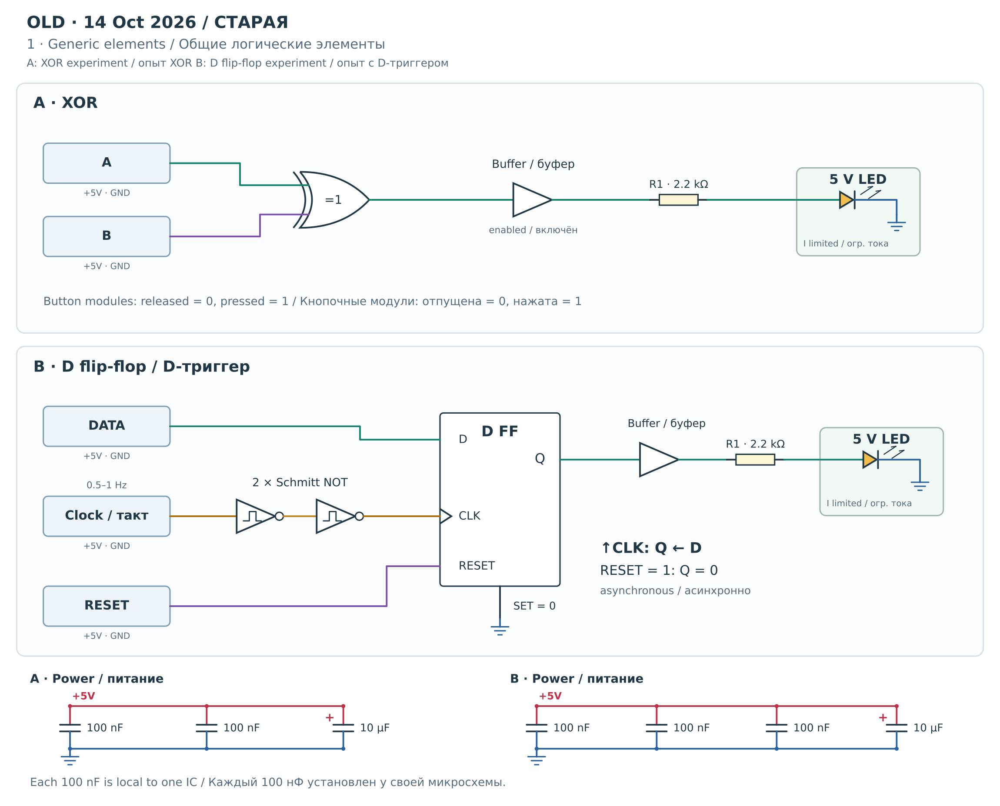
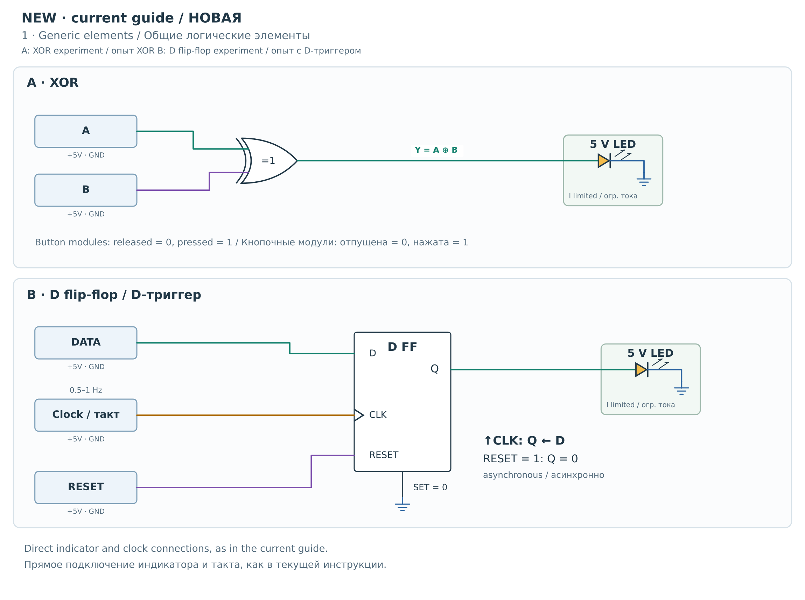
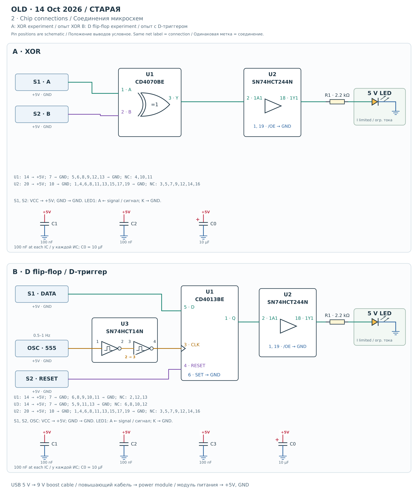
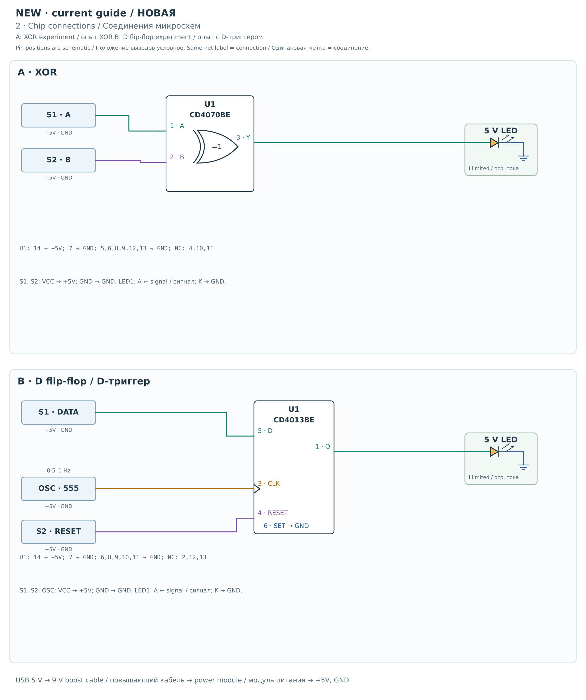
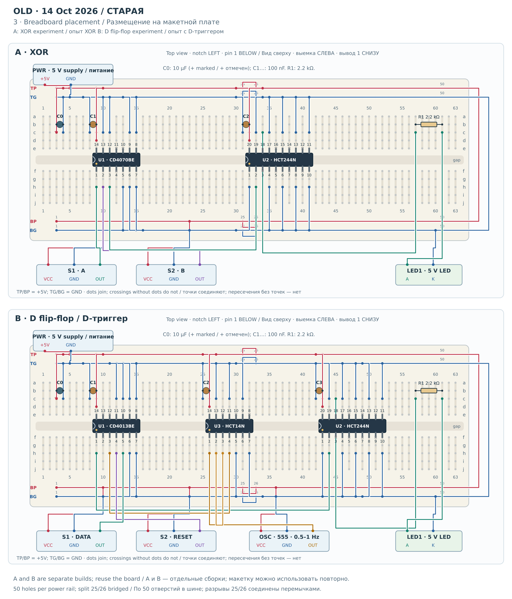
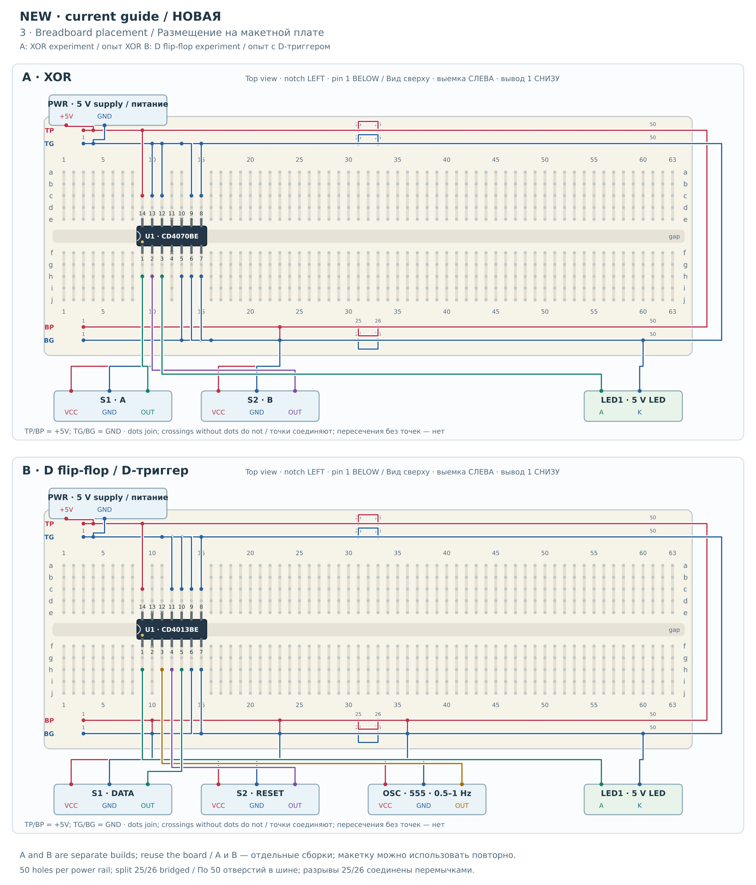

Что изменилось между редакциями
| Элемент | Старая · 14 октября | Текущая |
|---|---|---|
| Выход XOR | CD4070 → SN74HCT244 → 2.2 kΩ → 5 V LED | CD4070 → 5 V LED |
| Выход триггера | CD4013 Q → SN74HCT244 → 2.2 kΩ → 5 V LED | CD4013 Q → 5 V LED |
| Путь такта | 555 OUT → HCT14 (1→2) → HCT14 (3→4) → CD4013 CLK | 555 OUT → CD4013 CLK |
| Внешние конденсаторы | 100 нФ у каждой ИС, плюс один полярный 10 мкФ на сборку. | В этой редакции не заданы; в рисунок не добавлены. |
| Микросхем в A / B | 2 / 3 | 1 / 1 |
| Логическое поведение | Таблица XOR; выборка D по положительному фронту; асинхронный сброс единицей. | То же предусмотренное логическое поведение. |
Это восстановление схем по двум текстам. Панель B заменяет опыт XOR, а не соединяется с панелью A. Обозначения U1, C1 и другие начинаются заново в каждой панели. Замены XOR на AND/OR/инвертор и необязательное наблюдение /Q здесь не являются дополнительными собранными схемами.
Показан один канал индикации. В старом списке предусмотрены восемь резисторов 2,2 кОм для полного узла наблюдения, но инструкция первого канала использует только R1; семь неиспользуемых входов буфера заземлены, выходы свободны. LED1 — указанный светодиод на 5 В с ограничением тока либо канал 0 пассивной гребёнки на 5 В с общим катодом. Имеющееся внутреннее ограничение тока входит в сам компонент.
1. Общая логическая схема
XOR, D-триггер по положительному фронту, асинхронный RESET, старый буфер и два инвертора Шмитта показаны без привязки к выводам конкретной ИС. Старые конденсаторы питания показаны отдельно под логикой.






2. Соединения между микросхемами
Сигнальные соединения подписаны настоящими номерами выводов. Списки под схемами задают питание, все заземлённые свободные входы и все неподключённые выходы. Положение выводов здесь условное, не вид корпуса.






3. Размещение и провода на макетке
Каждая панель — самостоятельная сборка с объединёнными пятёрками отверстий, явными перемычками шин и выводами деталей. Таблицы ниже задают точные отверстия. Для любого увеличения откройте SVG.






- Выемка DIP обращена ВЛЕВО. Вывод 1 — снизу слева, в ряду f; вывод с наибольшим номером — прямо над ним в ряду e. Каждая ИС пересекает канавку.
- a–e одного столбца образуют контакт; f–j — другой. Канавка разделяет их. TP/BP — верхняя/нижняя положительные шины, TG/BG — верхняя/нижняя земля. Нумерация шин относится к этому рисунку.
- На изображённой шине 50 отверстий и разрыв между 25 и 26. Четыре короткие перемычки соединяют половины; две длинные — верхние и нижние шины. Сопоставьте их с реальной связностью вашей платы.
- PWR показывает подключение выхода стабилизированных 5 В. До него: USB 5 В → повышающий кабель 9 В → модуль питания макетки, установленный на 5 В. Логику питает только стабилизированный выход.
- Внешние модули показаны по именам контактов, без гарантии порядка ножек разъёма. Используйте реальные метки VCC, GND и OUT. Соединение обозначено точкой конца провода; пересечение без точки не соединяет.
- Переподключайте при выключенном питании. Соберите A или B: сначала шины и постоянные уровни входов, затем сигналы; перед включением сверьте отверстия с таблицей.
+5V · GND · данные / результат · B / RESET · такт
Назначение выводов и точные концы перемычек
В числа ниже входят шесть перемычек шин и все провода внешних модулей, включая два выходных провода PWR. Ножки деталей не считаются перемычками. Это количества для данных рисунков, а не новый список покупки наборов.
Старая · A / XOR · 43 проводов-перемычек
Компоненты и размещение
| Позиция | Тип / номинал | Размещение |
|---|---|---|
| U1 | CD4070BE | Вывод 1 в f9 |
| U2 | SN74HCT244N | Вывод 1 в f32 |
| R1 | 2.2 kΩ | b57 ↔ b61 |
| C1 | 100 nF | b9 ↔ b8 у U1 |
| C2 | 100 nF | b32 ↔ b31 у U2 |
| C0 | 10 µF | b3 ↔ b4 · + в b3, − в b4 |
Все выводы
| Вывод | Функция | Отверстие | Цепь |
|---|---|---|---|
| U1.1 | A | f9 | A |
| U1.2 | B | f10 | B |
| U1.3 | Y | f11 | XOR |
| U1.4 | Y2 | f12 | NC — не подключать |
| U1.5 | A2 | f13 | GND |
| U1.6 | B2 | f14 | GND |
| U1.7 | VSS | f15 | GND |
| U1.8 | A3 | e15 | GND |
| U1.9 | B3 | e14 | GND |
| U1.10 | Y3 | e13 | NC — не подключать |
| U1.11 | Y4 | e12 | NC — не подключать |
| U1.12 | A4 | e11 | GND |
| U1.13 | B4 | e10 | GND |
| U1.14 | VDD | e9 | +5V |
| U2.1 | /1OE | f32 | GND |
| U2.2 | 1A1 | f33 | XOR |
| U2.3 | 2Y4 | f34 | NC — не подключать |
| U2.4 | 1A2 | f35 | GND |
| U2.5 | 2Y3 | f36 | NC — не подключать |
| U2.6 | 1A3 | f37 | GND |
| U2.7 | 2Y2 | f38 | NC — не подключать |
| U2.8 | 1A4 | f39 | GND |
| U2.9 | 2Y1 | f40 | NC — не подключать |
| U2.10 | GND | f41 | GND |
| U2.11 | 2A1 | e41 | GND |
| U2.12 | 1Y4 | e40 | NC — не подключать |
| U2.13 | 2A2 | e39 | GND |
| U2.14 | 1Y3 | e38 | NC — не подключать |
| U2.15 | 2A3 | e37 | GND |
| U2.16 | 1Y2 | e36 | NC — не подключать |
| U2.17 | 2A4 | e35 | GND |
| U2.18 | 1Y1 | e34 | BUF |
| U2.19 | /2OE | e33 | GND |
| U2.20 | VCC | e32 | +5V |
Список перемычек
| ID | Конец 1 | Конец 2 | Цепь |
|---|---|---|---|
| J01 | TP25 | TP26 | +5V |
| J02 | TG25 | TG26 | GND |
| J03 | BP25 | BP26 | +5V |
| J04 | BG25 | BG26 | GND |
| J05 | TP1 | BP1 | +5V |
| J06 | TG1 | BG1 | GND |
| J07 | h13 | BG10 | GND |
| J08 | h14 | BG11 | GND |
| J09 | h15 | BG12 | GND |
| J10 | c15 | TG11 | GND |
| J11 | c14 | TG10 | GND |
| J12 | c11 | TG8 | GND |
| J13 | c10 | TG7 | GND |
| J14 | c9 | TP6 | +5V |
| J15 | h32 | BG24 | GND |
| J16 | h35 | BG28 | GND |
| J17 | h37 | BG30 | GND |
| J18 | h39 | BG31 | GND |
| J19 | h41 | BG33 | GND |
| J20 | c41 | TG33 | GND |
| J21 | c39 | TG31 | GND |
| J22 | c37 | TG30 | GND |
| J23 | c35 | TG28 | GND |
| J24 | c33 | TG27 | GND |
| J25 | c32 | TP24 | +5V |
| J26 | d9 | TP7 | +5V |
| J27 | c8 | TG5 | GND |
| J28 | d32 | TP27 | +5V |
| J29 | c31 | TG24 | GND |
| J30 | c3 | TP2 | +5V |
| J31 | c4 | TG2 | GND |
| J32 | PWR.+5V | TP3 | +5V |
| J33 | PWR.GND | TG3 | GND |
| J34 | S1.VCC | BP7 | +5V |
| J35 | S1.GND | BG7 | GND |
| J36 | S2.VCC | BP18 | +5V |
| J37 | S2.GND | BG18 | GND |
| J38 | LED1.K | BG49 | GND |
| J39 | h9 | S1.OUT | A |
| J40 | h10 | S2.OUT | B |
| J41 | h11 | h33 | XOR |
| J42 | c34 | c57 | BUF |
| J43 | c61 | LED1.A | LED |
Старая · B / D FF · 55 проводов-перемычек
Компоненты и размещение
| Позиция | Тип / номинал | Размещение |
|---|---|---|
| U1 | CD4013BE | Вывод 1 в f9 |
| U3 | SN74HCT14N | Вывод 1 в f26 |
| U2 | SN74HCT244N | Вывод 1 в f43 |
| R1 | 2.2 kΩ | b57 ↔ b61 |
| C1 | 100 nF | b9 ↔ b8 у U1 |
| C2 | 100 nF | b26 ↔ b25 у U3 |
| C3 | 100 nF | b43 ↔ b42 у U2 |
| C0 | 10 µF | b3 ↔ b4 · + в b3, − в b4 |
Все выводы
| Вывод | Функция | Отверстие | Цепь |
|---|---|---|---|
| U1.1 | Q | f9 | Q |
| U1.2 | /Q | f10 | NC — не подключать |
| U1.3 | CLK | f11 | CLK |
| U1.4 | RESET | f12 | RESET |
| U1.5 | D | f13 | DATA |
| U1.6 | SET | f14 | GND |
| U1.7 | VSS | f15 | GND |
| U1.8 | SET2 | e15 | GND |
| U1.9 | D2 | e14 | GND |
| U1.10 | RESET2 | e13 | GND |
| U1.11 | CLK2 | e12 | GND |
| U1.12 | /Q2 | e11 | NC — не подключать |
| U1.13 | Q2 | e10 | NC — не подключать |
| U1.14 | VDD | e9 | +5V |
| U3.1 | 1A | f26 | CLK_RAW |
| U3.2 | 1Y | f27 | CLK_INV |
| U3.3 | 2A | f28 | CLK_INV |
| U3.4 | 2Y | f29 | CLK |
| U3.5 | 3A | f30 | GND |
| U3.6 | 3Y | f31 | NC — не подключать |
| U3.7 | GND | f32 | GND |
| U3.8 | 4Y | e32 | NC — не подключать |
| U3.9 | 4A | e31 | GND |
| U3.10 | 5Y | e30 | NC — не подключать |
| U3.11 | 5A | e29 | GND |
| U3.12 | 6Y | e28 | NC — не подключать |
| U3.13 | 6A | e27 | GND |
| U3.14 | VCC | e26 | +5V |
| U2.1 | /1OE | f43 | GND |
| U2.2 | 1A1 | f44 | Q |
| U2.3 | 2Y4 | f45 | NC — не подключать |
| U2.4 | 1A2 | f46 | GND |
| U2.5 | 2Y3 | f47 | NC — не подключать |
| U2.6 | 1A3 | f48 | GND |
| U2.7 | 2Y2 | f49 | NC — не подключать |
| U2.8 | 1A4 | f50 | GND |
| U2.9 | 2Y1 | f51 | NC — не подключать |
| U2.10 | GND | f52 | GND |
| U2.11 | 2A1 | e52 | GND |
| U2.12 | 1Y4 | e51 | NC — не подключать |
| U2.13 | 2A2 | e50 | GND |
| U2.14 | 1Y3 | e49 | NC — не подключать |
| U2.15 | 2A3 | e48 | GND |
| U2.16 | 1Y2 | e47 | NC — не подключать |
| U2.17 | 2A4 | e46 | GND |
| U2.18 | 1Y1 | e45 | BUF |
| U2.19 | /2OE | e44 | GND |
| U2.20 | VCC | e43 | +5V |
Список перемычек
| ID | Конец 1 | Конец 2 | Цепь |
|---|---|---|---|
| J01 | TP25 | TP26 | +5V |
| J02 | TG25 | TG26 | GND |
| J03 | BP25 | BP26 | +5V |
| J04 | BG25 | BG26 | GND |
| J05 | TP1 | BP1 | +5V |
| J06 | TG1 | BG1 | GND |
| J07 | h14 | BG10 | GND |
| J08 | h15 | BG11 | GND |
| J09 | c15 | TG11 | GND |
| J10 | c14 | TG10 | GND |
| J11 | c13 | TG9 | GND |
| J12 | c12 | TG8 | GND |
| J13 | c9 | TP6 | +5V |
| J14 | h30 | BG24 | GND |
| J15 | h32 | BG27 | GND |
| J16 | c31 | TG24 | GND |
| J17 | c29 | TG23 | GND |
| J18 | c27 | TG21 | GND |
| J19 | c26 | TP20 | +5V |
| J20 | h43 | BG35 | GND |
| J21 | h46 | BG37 | GND |
| J22 | h48 | BG39 | GND |
| J23 | h50 | BG40 | GND |
| J24 | h52 | BG42 | GND |
| J25 | c52 | TG42 | GND |
| J26 | c50 | TG40 | GND |
| J27 | c48 | TG39 | GND |
| J28 | c46 | TG37 | GND |
| J29 | c44 | TG35 | GND |
| J30 | c43 | TP35 | +5V |
| J31 | d9 | TP7 | +5V |
| J32 | c8 | TG5 | GND |
| J33 | d26 | TP21 | +5V |
| J34 | c25 | TG20 | GND |
| J35 | d43 | TP34 | +5V |
| J36 | c42 | TG34 | GND |
| J37 | c3 | TP2 | +5V |
| J38 | c4 | TG2 | GND |
| J39 | PWR.+5V | TP3 | +5V |
| J40 | PWR.GND | TG3 | GND |
| J41 | S1.VCC | BP7 | +5V |
| J42 | S1.GND | BG7 | GND |
| J43 | S2.VCC | BP18 | +5V |
| J44 | S2.GND | BG18 | GND |
| J45 | LED1.K | BG49 | GND |
| J46 | OSC.VCC | BP29 | +5V |
| J47 | OSC.GND | BG29 | GND |
| J48 | h9 | h44 | Q |
| J49 | h11 | h29 | CLK |
| J50 | h12 | S2.OUT | RESET |
| J51 | h13 | S1.OUT | DATA |
| J52 | h26 | OSC.OUT | CLK_RAW |
| J53 | h27 | h28 | CLK_INV |
| J54 | c45 | c57 | BUF |
| J55 | c61 | LED1.A | LED |
Текущая · A / XOR · 24 проводов-перемычек
Компоненты и размещение
| Позиция | Тип / номинал | Размещение |
|---|---|---|
| U1 | CD4070BE | Вывод 1 в f9 |
Все выводы
| Вывод | Функция | Отверстие | Цепь |
|---|---|---|---|
| U1.1 | A | f9 | A |
| U1.2 | B | f10 | B |
| U1.3 | Y | f11 | XOR |
| U1.4 | Y2 | f12 | NC — не подключать |
| U1.5 | A2 | f13 | GND |
| U1.6 | B2 | f14 | GND |
| U1.7 | VSS | f15 | GND |
| U1.8 | A3 | e15 | GND |
| U1.9 | B3 | e14 | GND |
| U1.10 | Y3 | e13 | NC — не подключать |
| U1.11 | Y4 | e12 | NC — не подключать |
| U1.12 | A4 | e11 | GND |
| U1.13 | B4 | e10 | GND |
| U1.14 | VDD | e9 | +5V |
Список перемычек
| ID | Конец 1 | Конец 2 | Цепь |
|---|---|---|---|
| J01 | TP25 | TP26 | +5V |
| J02 | TG25 | TG26 | GND |
| J03 | BP25 | BP26 | +5V |
| J04 | BG25 | BG26 | GND |
| J05 | TP1 | BP1 | +5V |
| J06 | TG1 | BG1 | GND |
| J07 | h13 | BG10 | GND |
| J08 | h14 | BG11 | GND |
| J09 | h15 | BG12 | GND |
| J10 | c15 | TG11 | GND |
| J11 | c14 | TG10 | GND |
| J12 | c11 | TG8 | GND |
| J13 | c10 | TG7 | GND |
| J14 | c9 | TP6 | +5V |
| J15 | PWR.+5V | TP2 | +5V |
| J16 | PWR.GND | TG2 | GND |
| J17 | S1.VCC | BP7 | +5V |
| J18 | S1.GND | BG7 | GND |
| J19 | S2.VCC | BP18 | +5V |
| J20 | S2.GND | BG18 | GND |
| J21 | LED1.K | BG49 | GND |
| J22 | h9 | S1.OUT | A |
| J23 | h10 | S2.OUT | B |
| J24 | h11 | LED1.A | XOR |
Текущая · B / D FF · 26 проводов-перемычек
Компоненты и размещение
| Позиция | Тип / номинал | Размещение |
|---|---|---|
| U1 | CD4013BE | Вывод 1 в f9 |
Все выводы
| Вывод | Функция | Отверстие | Цепь |
|---|---|---|---|
| U1.1 | Q | f9 | Q |
| U1.2 | /Q | f10 | NC — не подключать |
| U1.3 | CLK | f11 | CLK |
| U1.4 | RESET | f12 | RESET |
| U1.5 | D | f13 | DATA |
| U1.6 | SET | f14 | GND |
| U1.7 | VSS | f15 | GND |
| U1.8 | SET2 | e15 | GND |
| U1.9 | D2 | e14 | GND |
| U1.10 | RESET2 | e13 | GND |
| U1.11 | CLK2 | e12 | GND |
| U1.12 | /Q2 | e11 | NC — не подключать |
| U1.13 | Q2 | e10 | NC — не подключать |
| U1.14 | VDD | e9 | +5V |
Список перемычек
| ID | Конец 1 | Конец 2 | Цепь |
|---|---|---|---|
| J01 | TP25 | TP26 | +5V |
| J02 | TG25 | TG26 | GND |
| J03 | BP25 | BP26 | +5V |
| J04 | BG25 | BG26 | GND |
| J05 | TP1 | BP1 | +5V |
| J06 | TG1 | BG1 | GND |
| J07 | h14 | BG10 | GND |
| J08 | h15 | BG11 | GND |
| J09 | c15 | TG11 | GND |
| J10 | c14 | TG10 | GND |
| J11 | c13 | TG9 | GND |
| J12 | c12 | TG8 | GND |
| J13 | c9 | TP6 | +5V |
| J14 | PWR.+5V | TP2 | +5V |
| J15 | PWR.GND | TG2 | GND |
| J16 | S1.VCC | BP7 | +5V |
| J17 | S1.GND | BG7 | GND |
| J18 | S2.VCC | BP18 | +5V |
| J19 | S2.GND | BG18 | GND |
| J20 | LED1.K | BG49 | GND |
| J21 | OSC.VCC | BP29 | +5V |
| J22 | OSC.GND | BG29 | GND |
| J23 | h9 | LED1.A | Q |
| J24 | h11 | OSC.OUT | CLK |
| J25 | h12 | S2.OUT | RESET |
| J26 | h13 | S1.OUT | DATA |
Проверки, границы и источники
Все четыре сборки прошли проверку связности макетки: нет двух выводов/проводов в одном отверстии, замыканий разных цепей, пропущенных соединений через контакты и шины; каждый свободный выход изолирован. Проверены активные пути выводов и ориентация ИС. Обе исходные инструкции не изменены. Это проверка рисунков и цепей, без физической сборки и измерений задержек/токов.
Результаты и хеши исходников · Полная модель выводов и проводов · Генератор схем · Генератор страниц
Номера выводов сверены с рисунками производителя: CD4070B (стр. 2) · CD4013B (стр. 3) · SN74HCT244 (стр. 3) · SN74HCT14 (стр. 3).
Обе языковые страницы используют общие шесть векторных рисунков и шесть PNG. Подписи рисунков двуязычны; позиции, имена сигналов и координаты отверстий совпадают.